Parameters
Constraints
Parameters
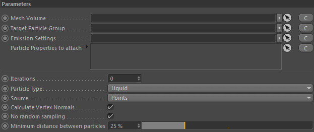
Mesh Volume
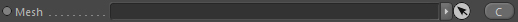
Takes a mesh-based Volume or Mesh node to emit particles from.
Currently MultiVolume and MultiMeshes are not supported.
Target Particle Group

Link the Particle Group which should take the generated particles.
Emission Settings
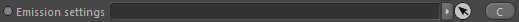
Link Particle Emission Settings in here that define the emission behavior.
Particle Properties to attach
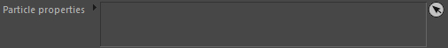
The emitter will attach any particle property you assign here to each generated/emitted particle.
Note:
Remember that each particle automatically gets a Position and a Velocity property attached, so it's not necessary to drop them here.
If you do drop a velocity property here, it will initialise born particles with its start value.
Remember that each particle automatically gets a Position and a Velocity property attached, so it's not necessary to drop them here.
If you do drop a velocity property here, it will initialise born particles with its start value.
Iterations
Allows to loop the evaluation of the emitter. Define how many times it should repeat.
This is used if you want to have a regular distribution of samples on the mesh surface.
Choose a rather low particle emission count value (in the Emission Settings) and then use some higher iterations.
Finally control the distance between the samples with "Minimum Distance between samples".
Choose a rather low particle emission count value (in the Emission Settings) and then use some higher iterations.
Finally control the distance between the samples with "Minimum Distance between samples".
Particle Type
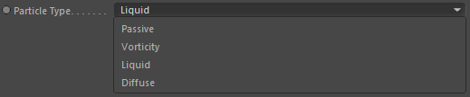
Defines the particle type to generate in the linked target particle group.
Source
Define the emission source.
1. Polygon: particles are generated randomly on the polygon surface.
2. Points: particles are generated only at mesh points.
3. BrushData: particles only generated at brush data locations stored on the source mesh node.
Minimum distance between particles
Defines the minimum distance between existing and newly generated particles.
The value is given in voxels. 100% = length of a grid cell.
Parameters::Filling attached particle properties
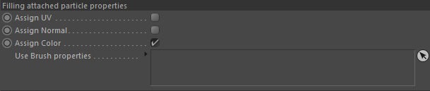
Assign UV
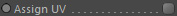
If the mesh node has UV data (means if the original C4D source mesh had UV data)
you can store the UV coordinates of the emission locations in the UV property of a particle.
Note: You need to add the UV property node to the "Particle Properties to attach" list for this to work.
Assign Normal
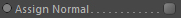
You can store the surface normal of the emission locations in the Normal property of a particle.
Note:
You need to add the Normal property to the "Particle Properties to attach" list for this to work.
Assign Color
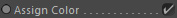
You can store a surface color (either sampled directly from a material sitting on the mesh or with a custom channel shader) into the color property of a particle.
Note:
You need to add the 'Color' property to the "Particle Properties to attach" list for this to work.
Use Brush properties
Here you can define available brush properties (generated by the Particle Brush tool) instead of surface data to transfer to the particles.
These can be: Normal, UV and Color.
Note: Brush properties are accessible by using the Particle properties.
Parameters::Color Sampling
Only available if 'Assign Color' is activated
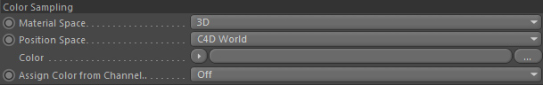
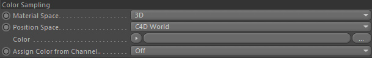
Material Space
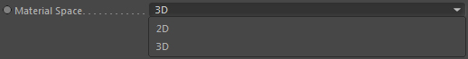
Defines which material space should be used to sample the shader that is defined in the mesh material's channel (the channel to use is defined with Assign color from channel..).
2D
UV space
3D
World Space
Position Space
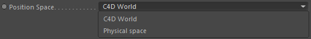
The space the position is defined in to sample the shader. It can either be in Cinema 4D unit space or the physical space of the Effex framework.
Color
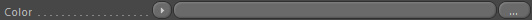
Define a channel shader here to sample the color value from. It will be stored in the Color property of the generated particles.
Note: You must attach a Color property (via Particle Properties to attach) for this to work.
Note: If you want to see the color of the particles in the editor view, assign the Color property node in the linked Particle Group::Display settings.
Assign Color from Channel..
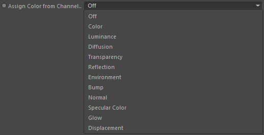
You can sample the color of any shader sitting on the surface. The original mesh object (the c4d polygon mesh) must have a material assigned for this.
Select the material channel that contains the shader you want to sample the color from. The channel must have a channel shader assigned.
If a color was successfully sampled it will be stored into the unique color property of each particle (must be attached).
Off - No color sampling takes place.
Any other mode - the according material channel to use.